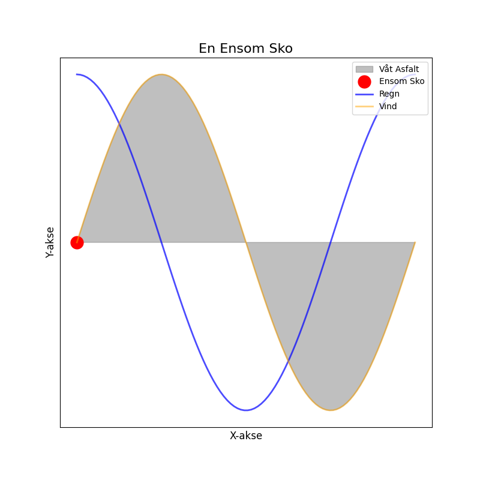

En ensom sko på våt asfalt, har mistet alt den hadde av salt. Den venter på en fot som går, mens regnet faller og vinden sår.

import matplotlib.pyplot as plt
import numpy as np
# Dikt:
# En ensom sko på våt asfalt,
# har mistet alt den hadde av salt.
# Den venter på en fot som går,
# mens regnet faller og vinden sår.
# Definer parametere
x = np.linspace(0, 2 * np.pi, 100)
y1 = np.sin(x)
y2 = np.cos(x)
# Lag figur og akser
fig, ax = plt.subplots(figsize=(8, 8))
# Plott våt asfalt (en ellipseform)
ax.fill(x, y1, color='gray', alpha=0.5, label='Våt Asfalt')
# Plott den ensomme skoen (en sirkel)
ax.plot(x[0], y1[0], 'ro', markersize=15, label='Ensom Sko')
# Plott regnet (en linje som faller)
ax.plot(x, y2, color='blue', alpha=0.7, linewidth=2, label='Regn')
# Plott vinden (en linje som sår)
ax.plot(x, y1, color='orange', alpha=0.5, linewidth=2, label='Vind')
# Tittel og etiketter
ax.set_title('En Ensom Sko', fontsize=16)
ax.set_xlabel('X-akse', fontsize=12)
ax.set_ylabel('Y-akse', fontsize=12)
# Legg til en legende
ax.legend(loc='upper right')
# Frys aksene for å unngå problemer med å oppdatere
ax.set_xticks([])
ax.set_yticks([])
# Lagre figuren
plt.savefig(output_path)execution_ok=True fallback_used=False image_ok=True